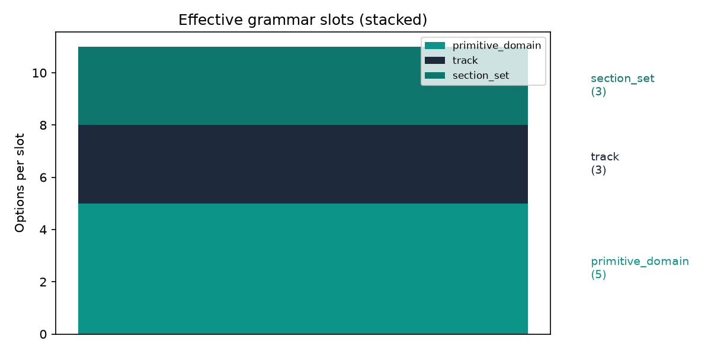
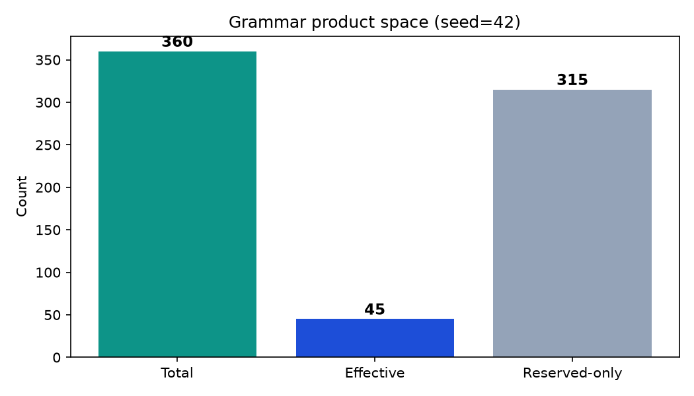
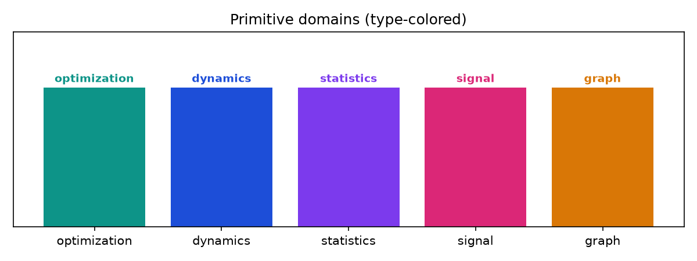
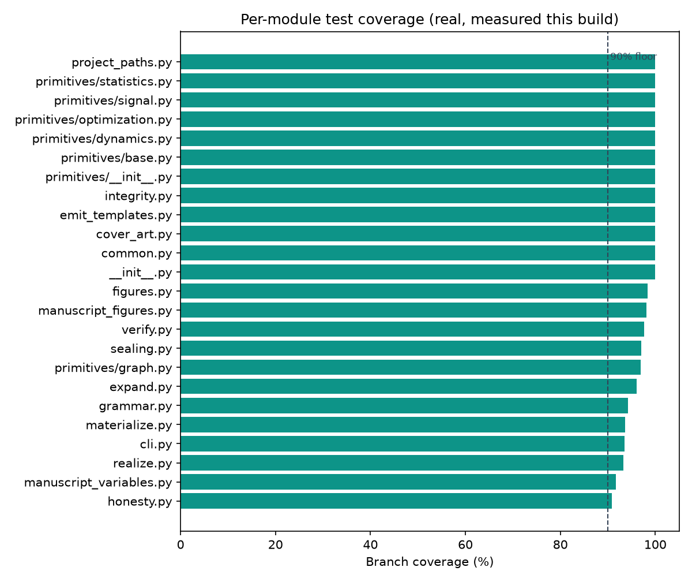

| Slot | Options | Values |
|---|---|---|
| primitive_domain | 5 | optimization, dynamics, statistics, signal, graph |
| track | 3 | analytical, empirical, hybrid |
| section_set | 3 | minimal, standard, extended |
| figure_profile | 2 | minimal, full |
| qr_profile | 2 | off, on |
| integrity_profile | 2 | sha256, merkle |

figure_profile, qr_profile, integrity_profile
Every row in the table above is a GrammarSlot parsed
from manuscript/config.yaml by parse_grammar()
(src/grammar.py). Each slot contributes a multiplicative
factor to Grammar.product_size, which is the raw
cross-product of all option counts — not an estimate, but the literal
n *= len(s.options) accumulation over every slot. The
Grammar.grammar_hash property serialises the seed, every
slot name, and every option list into a canonical JSON string
(canonical()) and takes the first sixteen hex characters of
its SHA-256 digest — f84a8f9dbcb18e37 for the grammar as
currently checked into this project. Any edit to a slot’s option list,
the addition or removal of a slot, or a change to the seed changes this
hash deterministically; it is not a version string maintained by
hand.
The six slots split into two categories. Three are
content-determining: primitive_domain selects
which of the five kernel modules described below is copied into the
child project, track selects the manuscript’s analytical
posture (analytical, empirical, or
hybrid), and section_set selects which subset
of manuscript sections is rendered (minimal,
standard, or extended). The remaining three —
figure_profile, qr_profile, and
integrity_profile — are declared in
RESERVED_SLOTS (src/grammar.py) and govern
only presentational and sealing behaviour: how many figures are
generated, whether the sealed payload is rendered as a QR PNG, and
whether the provenance hash is a flat SHA-256 or a Merkle root over
per-file hashes (src/integrity.py::merkle_root). None of
the three reserved slots changes which primitive kernel runs or what its
output is, which is exactly why
Grammar.effective_product_size — the number that matters
when asking “how many scientifically distinct children can this
grammar produce” — divides the reserved slots back out. The ratio
between the total and effective product sizes above is, by construction,
the product of the three reserved slots’ own option counts; no other
slot is capable of changing that ratio.
| Slot | Options | Values |
|---|---|---|
| primitive_domain | 5 | optimization, dynamics, statistics, signal, graph |
| track | 3 | analytical, empirical, hybrid |
| section_set | 3 | minimal, standard, extended |
grammar.effective_slots (src/grammar.py) is
exactly grammar.slots filtered against
RESERVED_SLOTS — the same list rendered in the previous
section, minus the three sealing/presentation dimensions. This is the
space a reviewer should reason about when asking whether the grammar is
a meaningful generator rather than a combinatorial trick that multiplies
unrelated toggles: 5 primitive domains times three narrative tracks
times three section-set sizes is the actual space of scientifically
distinguishable children this template can emit.

Each domain in
- optimization - dynamics - statistics - signal - graph is
a Python module under src/primitives/ exporting a
PRIMITIVES: tuple[PrimitiveSpec, ...] collected by
collect_primitives()
(src/primitives/__init__.py). A PrimitiveSpec
(src/primitives/base.py) bundles a callable kernel, an
example input, an expected output (or None when the check
is structural rather than a fixed value), a numerical tolerance, and —
for five of the eight kernels — a negative_control callable
whose entire purpose is to fail the primary kernel’s own success
criterion. collect_primitives() returns exactly the five
domains named above
(test_collect_primitives_expected_modules) and a total of
eight primitive kernels across them
(test_total_primitive_count): two in
optimization, one in dynamics, one in
statistics, two in signal, and two in
graph.
Optimization. gradient_descent
(src/primitives/optimization.py) runs explicit gradient
descent on the convex quadratic f(x) = 0.5 (x-c)^T A (x-c),
whose gradient is A(x-c). Because the problem is convex
quadratic, its analytic minimiser is known in closed form —
x* = c, computed independently by the sibling kernel
analytic_minimizer — so the iterative and closed-form
solutions can be cross-checked against each other rather than against a
single hardcoded expectation. On the example input (a diagonal
A, c = (1, -1), 200 steps at learning rate
0.1) the two agree to within 1e-4. The domain’s negative
control, _negative_control_wrong_sign, is the same loop
with the gradient step’s sign flipped (x = x + lr * grad
instead of x = x - lr * grad); this turns descent into
ascent and diverges away from c instead of converging to
it, giving the mutation gate (see Honesty Contract) something to detect
if the sign were ever silently restored to “wrong.”
Dynamics. damped_oscillator
(src/primitives/dynamics.py) integrates the damped harmonic
oscillator ODE x'' + 2*zeta*omega*x' + omega^2*x = 0 with
explicit Euler stepping, and separately computes the closed-form
under-damped envelope x0 * exp(-zeta*omega*t). The test
suite does not merely check that the two arrays are close; it checks
four independent structural properties of the same trajectory: the
numerical amplitude stays inside the analytical envelope plus a 5%
Euler-error tolerance
(test_damped_oscillator_amplitude_bounded_by_envelope), the
envelope itself is monotonically non-increasing
(test_damped_oscillator_envelope_monotone_decreasing),
heavy damping drives the trajectory near zero by the end of the run
(test_damped_oscillator_decays_to_near_zero), and the
initial condition is reproduced exactly. The negative control,
_zero_damping_control, re-runs the same integrator with
zeta forced to zero; its envelope is flat at
x0 rather than decaying, and
test_zero_damping_envelope_flat checks that flatness
directly — so a broken damping term that decayed regardless of the
damping value would be caught, not just a broken damping term that fails
to decay at all.
Statistics. ols_fit
(src/primitives/statistics.py) solves ordinary least
squares via the normal equations,
beta_hat = (X^T X)^{-1} X^T y, solved with
numpy.linalg.solve rather than an explicit matrix inverse.
The example input is synthetic, not observational: fifty rows with an
intercept column and one Gaussian covariate
(rng = np.random.default_rng(42)), a fixed true coefficient
vector beta = (2.0, -3.0), and additive noise scaled to
0.1 standard deviations. Because the data-generating
coefficients are known by construction, recovery is checked directly —
test_ols_fit_recovers_beta requires the estimated and true
beta to agree within Euclidean distance 0.1 — alongside an
R² floor of 0.95 and a near-zero mean residual. The
negative control, _shuffled_control, permutes the
y labels with an independently seeded generator
(rng = np.random.default_rng(0)) before fitting; breaking
the true X-y correspondence this way is
asserted to drop R² below 0.5
(test_shuffled_control_poor_r_squared), giving a concrete,
falsifiable bound on how badly a shuffled fit should
perform.
Signal. This domain carries two kernels validated by
structural properties rather than fixed target arrays, since
expected=None for both. dft computes the
Discrete Fourier Transform directly as a matrix-vector product against
the exponential basis matrix exp(-2j*pi*k*n/N) — an
explicit O(N^2) construction, not a call into
numpy.fft. Its correctness is checked by Parseval’s theorem
(sum(|X[k]|^2) == N * sum(|x[n]|^2) to within a relative
tolerance of 1e-6) and by recovering the correct dominant
frequency bin (index 5, positive or negative) from a pure 5 Hz sinusoid
sampled at 64 points. convolve_known wraps
numpy.convolve with a fixed three-tap smoothing kernel,
[0.25, 0.5, 0.25]; its own test suite checks that smoothing
cannot increase variance
(test_convolve_known_smoothing_reduces_variance). Its
negative control, _identity_kernel_convolve, substitutes
the identity kernel [1.0] under mode="same",
which by the definition of convolution must reproduce the input signal
exactly (atol=1e-12) — a stronger, algebraically-derived
check than an arbitrary “looks different” comparison.
Graph. bfs_distances
(src/primitives/graph.py) computes shortest-path distances
on a fixed five-node undirected graph (A–E,
encoded as an adjacency dict) via a plain breadth-first queue. Because
the graph is fixed and small, the expected distances from source
A are enumerable by hand and are asserted exactly:
{A: 0, B: 1, C: 1, D: 2, E: 3}, with tolerance
0.0. Its negative control,
_disconnected_control, replaces the adjacency of the source
node with an empty list, collapsing the reachable set to the source
alone — a graph-structural way of breaking the primitive rather than
perturbing a numeric input. pagerank runs the standard
power-iteration update with damping 0.85 over 50
iterations, redistributing dangling nodes’ rank mass evenly rather than
dropping it. It has no single fixed expected output — rank values depend
on iteration count and are not hand-derivable — so it is instead
validated by three invariants any correct PageRank computation must
satisfy regardless of the specific graph: ranks sum to 1.0
within 1e-6, every node in the graph receives a rank entry,
and every rank is strictly positive (ensured by the
(1-damping)/n teleportation floor added at every
iteration).
Across the five domains, five of the eight primitives carry an
explicit negative control; the remaining three
(analytic_minimizer, dft, and
pagerank) are validated purely through cross-checks against
an independent computation or through algebraic invariants (Parseval’s
theorem, PageRank’s stochastic-normalization property) that a broken
implementation would be unlikely to satisfy by accident. This mirrors
the property-based testing tradition [claessen2000quickcheck;
maciver2019hypothesis]: rather than asserting a single hand-picked
input/output pair, the suite asserts properties that must hold across a
class of inputs — the same style used at the grammar level in
tests/test_property_invariants.py, where
hypothesis-generated seeds are used to check, for every
seed drawn, that product_size really is the product of
option counts and that effective_product_size does not
exceed it.
Running
uv run python scripts/autopoiesis.py expand --seed 42
produces a spec with primitive_domain deterministically
selected from the grammar.
All 5 domains successfully materialize runnable child projects. Each child project:
primitives/ package with the selected
kernel.analysis.py without error.provenance.json that passes
verify_child.f84a8f9dbcb18e37Both the test count and coverage percentage above are produced by
measure_test_summary()
(src/manuscript_variables.py), which shells out to this
project’s own pytest + coverage run
(--cov-branch, matching the repository-root branch-coverage
methodology) against tests/ and src/ and
parses the real passed count and coverage.json
totals from that subprocess. There is no fallback literal: if the
subprocess fails, times out, or its output fails to parse, both fields
resolve to the string "pending" rather than a
plausible-looking number — the same discipline that governs every other
numeric token in this manuscript.

The aggregate 96.28% is a mean weighted by statement and branch
count, not a uniform floor — [@fig:coverage_by_module]
shows the real spread. As of this measurement every module clears the
90% line; common.py and cover_art.py sit at
100% and figures.py at 98.41% after closing what were, in
an earlier draft of this manuscript, the three lowest-coverage modules
(see CHANGELOG.md’s Wave 10 entry for the specific branches
that were untested and the tests added to close them); every module
under src/primitives/ and the honesty/integrity core sit at
or near 100%. Both the aggregate number and this per-module breakdown
are read from the same persisted
output/data/coverage_full.json — a single generator run,
not two separately-computed views that could silently drift apart. This
is a snapshot, not a permanent state: coverage moves as tests are added
or code changes, and [@fig:coverage_by_module]
should be regenerated (stage_02_analysis.py) rather than
trusted from a prior render whenever that question matters.